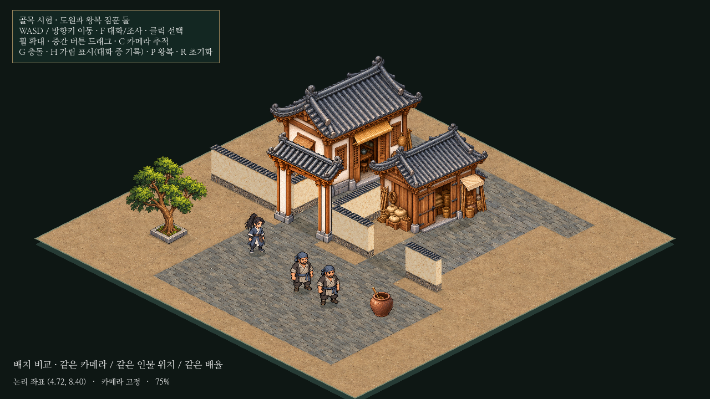
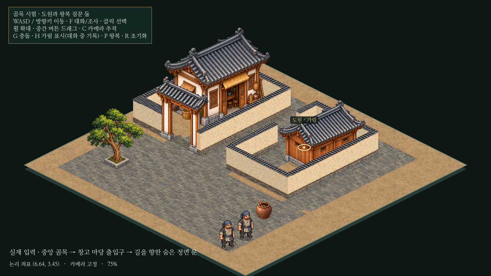

건물 방향과 마당 경계 정정
창고는 입구가 중앙 골목을 향하도록 방향을 돌리고, 카메라에 보이는 뒷면을 새로 그렸습니다. 민가와 창고의 마당을 각각 담장으로 구분했습니다. 이전처럼 뒤편으로 돌아가는 새 통로를 만든 방식이 아닙니다.
같은 플레이 카메라로 비교
1280×720 · 배율75% · 카메라(0,290) · 같은 인물 위치. 민가와 대문을 옮겨 두 마당을 확보했고 중앙 공용 골목은 열어 두었습니다. 이미지를 누르면 원본 크기로 확인합니다.

이전 해석: 길을 등진 창고에 뒤쪽 우회 출입구를 추가
 정정: 길을 향한 창고 정면·새 후면 그림·두 건물의 독립 마당
정정: 길을 향한 창고 정면·새 후면 그림·두 건물의 독립 마당실제 입력으로 두 입구까지 이동
중앙 골목→창고 앞마당→가려진 정면 문, 외부 앞마당→민가 대문→민가 문턱 순서입니다. 마지막은 자동 짐꾼의 왕복입니다. 도원과 짐꾼의 기존 보행·크기·속도4.8은 유지했습니다. 영상 다운로드
마당과 담장의 기능
실제 문 앞 도착

창고 정면은 골목 쪽으로 돌려져 건물에 가려집니다. 기존 가림 표시로 도원 위치를 확인합니다.
민가의 앞마당과 정면 입구. 실내 입장 기능은 아직 없습니다.앞으로의 기준
입구가 접근 도로를 향하도록 건물 방향부터 정합니다. 필요한 방향의 그림을 새로 그리고, 담장은 소속 건물의 마당을 외부와 구분하는 경계로 연결합니다. 건물 입구와 길을 막지 않으며 실내가 없는 건물도 같은 기준을 따릅니다.
검사 결과와 남은 한계 · 수정된 배치 규칙 · 새 창고 후면 원본
Godot에서 res://prototypes/isometric/main.tscn 열기 → F6. WASD/방향키 이동, F 대화, G 경계/접근 경로, P 자동 왕복 정지/재개. F5는 기존 본게임입니다.